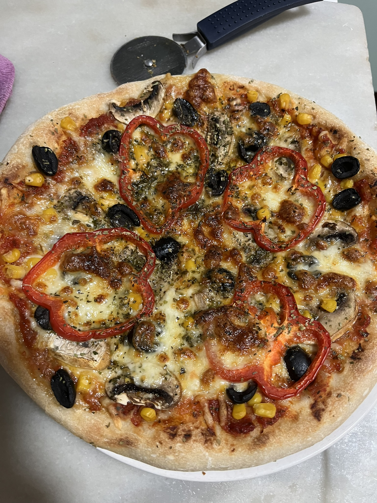
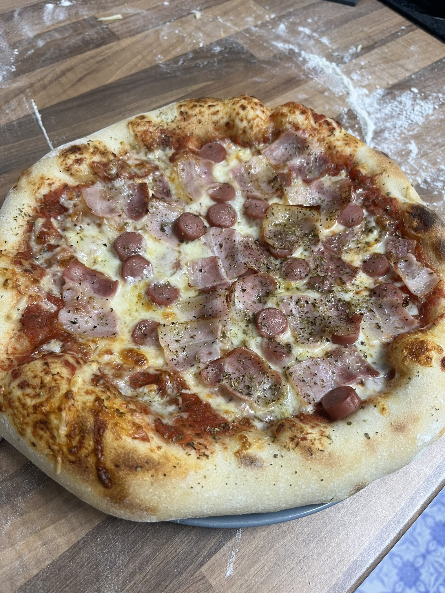
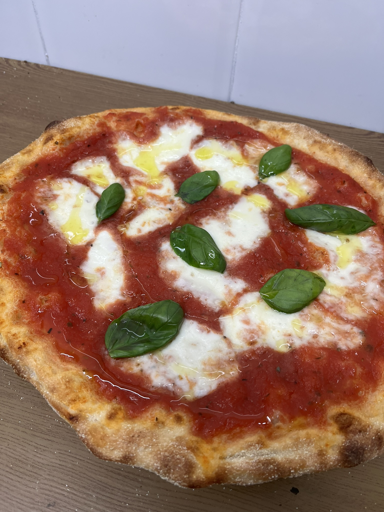
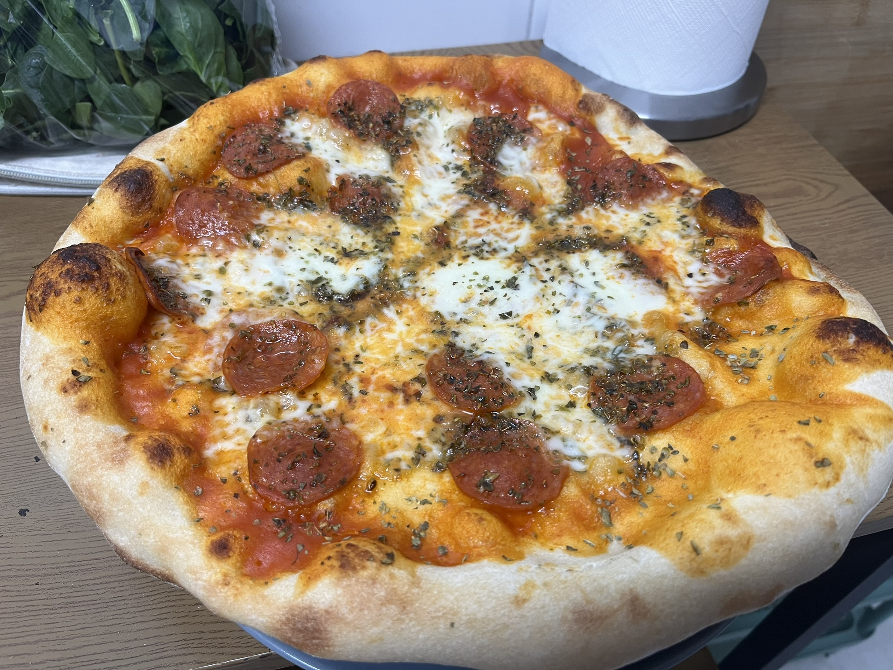
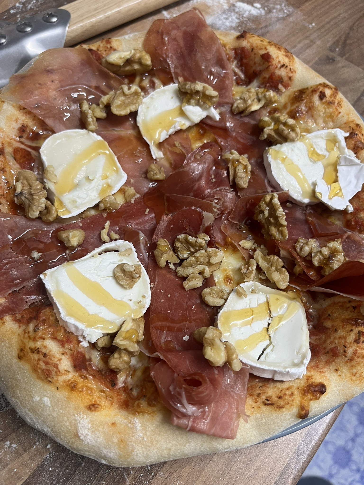

Mediterrània Vegetal
La frescor de l'hort a la teva taula. Base de tomàquet, Mozzarella fresca, olives negres, xampinyons, panís i pebrot vermell
Kebab

Una mossegada potent i plena de sabor. Base de tomàquet, Mozzarella fresca, deliciosa carn de kebab i un fil de salsa de iogurt casolana.
Affumicato

L'elegància del mar en una pizza. Base de crema de llet, Mozzarella fresca i finíssimes làmines de salmó fumat
Monti e Mare

Contrast exquisit de mar i muntanya. Base de crema de llet, Mozzarella, espinacs frescos, rulo de cabra i el punt salí de les anxoves
Pancetta e Frankfurt
Doble de carn, doble de gust! Salsa tomata, Mozzarella, trossos de frankfurt, beicon cruixent i un toc d'orenga
Margarita
La senzillesa d'un gran clàssic italià. Salsa tomata, fulles d'alfàbrega fresca i Mozzarella fresca. L'essència de Nàpols
Peperoncino
Atrevida i amb un toc picant. Salsa tomata, Mozzarella, abundant pepperoni i una mica d'orenga
Dolce e Salato
L'equilibri perfecte entre sabors intensos. Salsa tomata, pernil de qualitat, rulo de cabra, nous i un fil de mel
Ortolana

Frescor i color en cada ingredient. Salsa tomata, mozzarella fresca, albergínia i tomàquets cherry